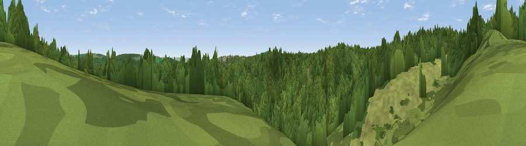

Viewpoint near Ellwood
#30216 in England · top 58% of its area beats it · near Ellwood · open accessWhere it is
The exact computed spot (SO 59625 07475). Click the marker for map links.
Public access: this spot lies on mapped open-access land (CRoW Act 2000) — you may roam here on foot. Computed from Natural England's CRoW access layer and OpenStreetMap rights of way — not the legal definitive map. Always verify locally.
The view, rendered

A 360° render of this exact spot computed from the terrain model, tree cover and land cover — summer colours, afternoon light, calibrated against photographs of famous viewpoints. Real trees, hedges and buildings will differ in detail.
The panorama
Grey silhouette: terrain skyline in each direction (720 bearings, Earth curvature and refraction included). Dashed green: skyline with trees (+15 m) and buildings (+8 m) as obstacles. Blue strip: how far the ground is visible on each bearing.
Where the view opens
Wedge length = distance to the farthest visible ground on that bearing (vegetation-aware). Rings at 10, 25 and 50 km.
What fills the view
89% woodland · 9% grassland ·
Angular shares of the visible panorama (visual magnitude), not map area. Landscape diversity 0.18 (0–1 Shannon).
Key numbers
More beautiful places nearby
The staircase of upgrades: each row has a higher view potential than everything closer. Driving times are estimates from straight-line distance, calibrated against real road routing — check an actual route before setting out.
| Place | Direction | Drive | Score |
|---|---|---|---|
| Viewpoint near Bream | SSE · 2 km | ~6 min | 58.7 |
| Viewpoint near Yorkley | E · 4 km | ~10 min | 70.9 |
| Buck Stone | NW · 7 km | ~15 min | 71.0 |
| Viewpoint near Littledean | NE · 10 km | ~19 min | 73.8 |
| Viewpoint near Ruardean | NNE · 10 km | ~20 min | 74.2 |
| Chase Wood Hill | N · 15 km | ~27 min | 77.6 |
| Viewpoint near Stinchcombe | ESE · 17 km | ~29 min | 79.4 |
| Viewpoint near Stinchcombe | ESE · 17 km | ~30 min | 80.5 |
51.76449, -2.58645 · source: screening · position refined by local search. Computed location — check access rights before visiting.